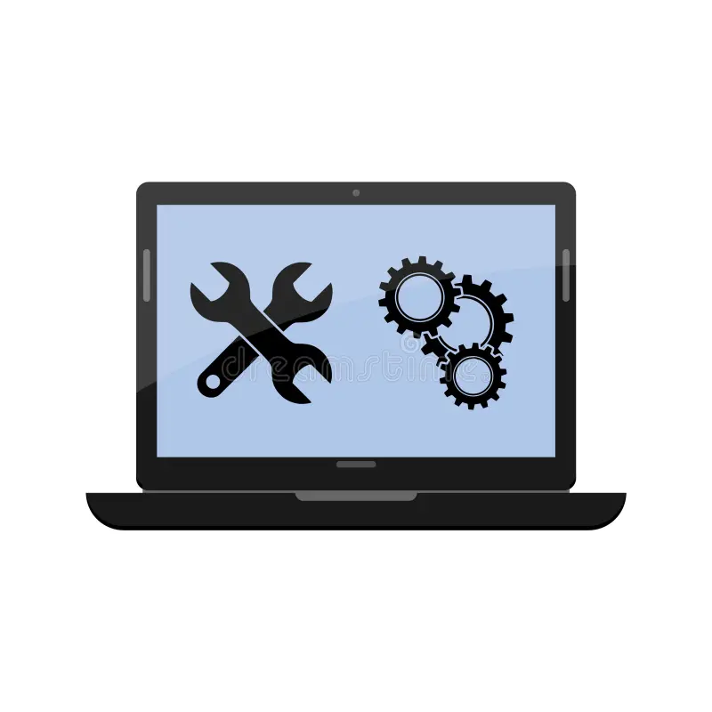

Dependiendo de la complejidad, solemos entregar en un plazo de 2 a 4 semanas.

Diagnóstico en 24 horas. Repuestos originales y garantía. Especialistas en pantallas, baterías, placas base y recuperación de datos.
Sustitución rápida, pantallas originales o equivalentes. Prueba y calibración incluida.
Diagnóstico de fallos eléctricos, sustitución de componentes SMD, reballing y micro-soldadura.
Recuperación de unidades dañadas, SSD y HDD. Presupuesto tras diagnóstico.
Dependiendo de la complejidad, solemos entregar en un plazo de 2 a 4 semanas.
Sí, incluimos 30 días de soporte técnico gratuito para tu tranquilidad.
Solo tienes que rellenar el formulario de arriba y nos pondremos en contacto contigo en menos de 24 horas.
Calle Quesitos Canarios 33, Madrid — Horario: L-V 9:00–18:00